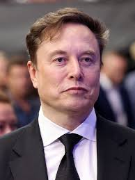

W 2002 roku Musk założył Space Exploration Technologies (SpaceX) z celem znacznego obniżenia kosztów transportu kosmicznego. Początki były niezwykle trudne – pierwsze trzy próby wystrzelenia rakiety Falcon 1 zakończyły się katastrofami. Dopiero czwarty lot w 2008 roku zakończył się sukcesem, co uratowało firmę przed bankructwem i pozwoliło zdobyć kontrakt z NASA. SpaceX zrewolucjonizowało przemysł kosmiczny, tworząc rakiety Falcon 9 oraz Falcon Heavy, których pierwsze stopnie potrafią pionowo lądować na ziemi i być używane wielokrotnie.
W 2004 roku Musk zainwestował w nowo powstałą spółkę Tesla Motors i objął stanowisko przewodniczącego rady nadzorczej, a później dyrektora generalnego. Celem Tesli stało się udowodnienie, że samochody elektryczne mogą być szybsze i bardziej atrakcyjne od aut spalinowych. Po sukcesie sportowego modelu Roadster firma wprowadziła na rynek luksusowy Model S, a następnie bardziej przystępne cenowo Model 3 oraz Model Y, stając się najbardziej wartościowym producentem samochodów na świecie.
